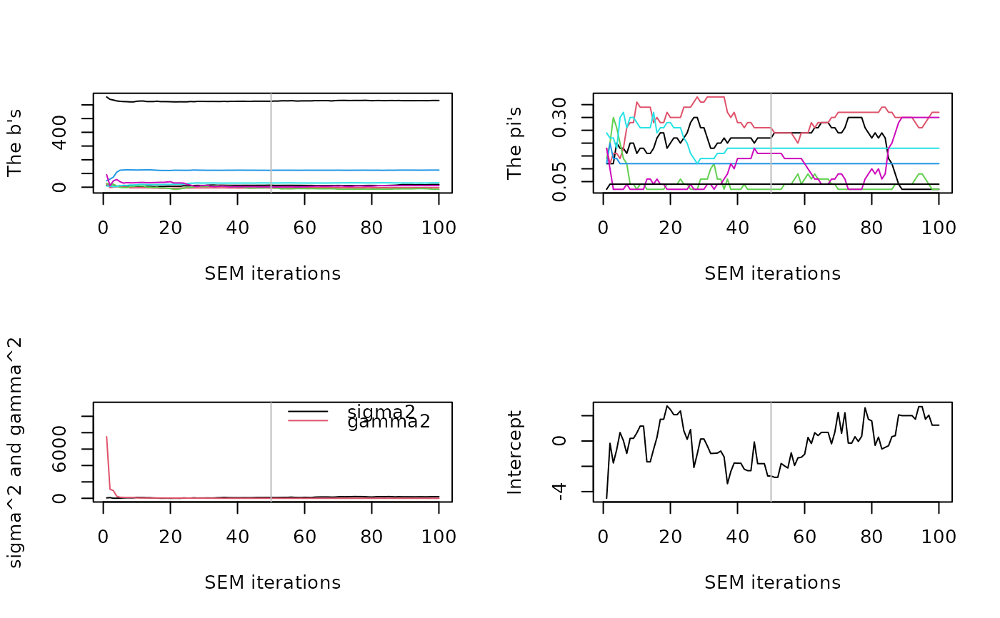

This function runs the CLERE Model. It returns an object of class
Clere. For more details please refer to
clere.
fitClere( y, x, g = 1, nItMC = 50, nItEM = 1000, nBurn = 200, dp = 5, nsamp = 200, maxit = 500, tol = 0.001, nstart = 2, parallel = FALSE, seed = NULL, plotit = FALSE, sparse = FALSE, analysis = "fit", algorithm = "SEM", theta0 = NULL, Z0 = NULL )
| y | [numeric]: The vector of observed responses - size |
|---|---|
| x | [matrix]: The matrix of predictors - size |
| g | [integer]: Either the number or the maximum of groups for fitting CLERE. Maximum number of groups is considered when model selection is required. |
| nItMC | [numeric]: Number of Gibbs iterations to generate the
partitions. After the |
| nItEM | [numeric]: Number of SEM iterations. |
| nBurn | [numeric]: Number of SEM iterations discarded before calculating the MLE which is averaged over SEM draws. |
| dp | [numeric]: Number of iterations between sampled partitions when calculating the likelihood at the end of the run. |
| nsamp | [numeric]: Number of sampled partitions for calculating the likelihood at the end of the run. |
| maxit | [numeric]: An EM algorithm is used inside the SEM to maximize
the complete log-likelihood p(y, Z|theta). |
| tol | [numeric]: Maximum increased in complete log-likelihood for the internal EM (stopping criterion). |
| nstart | [integer]: Number of random starting points to be used for fitting the model. |
| parallel | [logical]: Should the estimation from |
| seed | [integer]: An integer given as a seed for random number
generation. If set to |
| plotit | [logical]: Should a summary plot (base plot) be drawn after the run? |
| sparse | [logical]: Should a |
| analysis | [character]: Which analysis is to be performed. Values are
|
| algorithm | [character]: The algorithm to be chosen to fit the model. Either the SEM-Gibbs algorithm or the MCEM algorithm. The most efficient algorithm being the SEM-Gibbs approach. MCEM is not available for binary response. |
| theta0 | [vector(numeric)]: An initial guess of the model parameters.
When considering g components, the length of |
| Z0 | [vector(integer)]: A vector of integers representing an initial
partition for the variables. For 10 variables and 3 groups |
Object of class Clere.
Overview : clere-package
Classes : Clere, Pacs
Methods : plot, clusters, predict, summary
Functions : fitClere, fitPacs
Datasets : numExpRealData, numExpSimData, algoComp
library(clere) plotit <- FALSE sparse <- FALSE nItEM <- 100 nBurn <- nItEM / 2 nsamp <- 100 analysis <- "fit" algorithm <- "SEM" nItMC <- 1 dp <- 2 maxit <- 200 tol <- 1e-3 n <- 50 p <- 50 intercept <- 0 sigma <- 10 gamma <- 10 rho <- 0.5 g <- 5 probs <- c(0.36, 0.28, 0.20, 0.12, 0.04) Eff <- p * probs a <- 5 B <- a**(0:(g-1))-1 Z <- matrix(0, nrow = p, ncol = g) imax <- 0 imin <- 1 for (k in 1:g) { imin <- imax+1 imax <- imax+Eff[k] Z[imin:imax, k] <- 1 } Z <- Z[sample(1:p, p), ] if (g>1) { Beta <- rnorm(p, mean = c(Z%*%B), sd = gamma) } else { Beta <- rnorm(p, mean = B, sd = gamma) } theta0 <- NULL # c(intercept, B, probs, sigma^2, gamma^2) Z0 <- NULL # apply(Z, 1, which.max)-1 gmax <- 7 ## Prediction eps <- rnorm(n, mean = 0, sd = sigma) X <- matrix(rnorm(n*p), nrow = n, ncol = p) Y <- as.numeric(intercept+X%*%Beta+eps) tt <- system.time(mod <- fitClere(y = Y, x = X, g = gmax, analysis = analysis,algorithm = algorithm, plotit = plotit, sparse = FALSE,nItEM = nItEM, nBurn = nBurn, nItMC = nItMC, nsamp = nsamp, theta0 = theta0, Z0 = Z0) ) plot(mod)